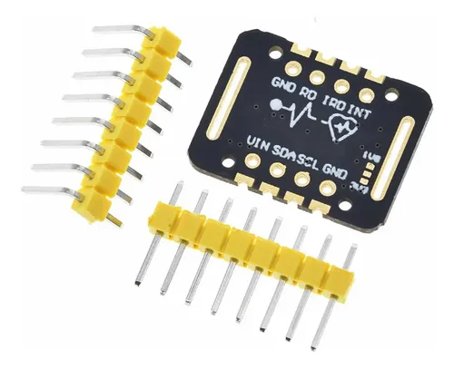
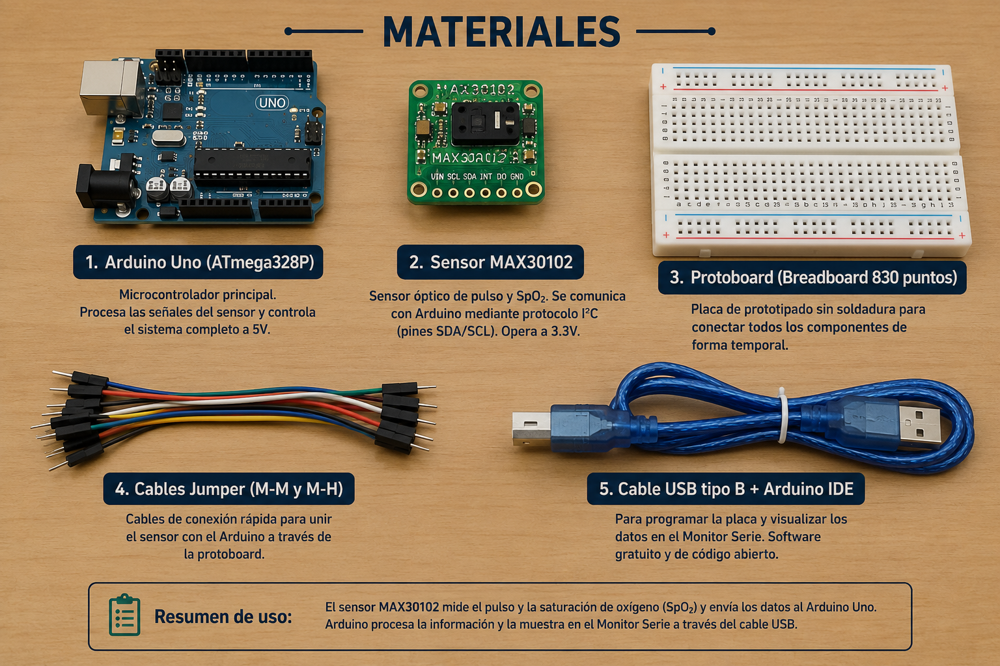
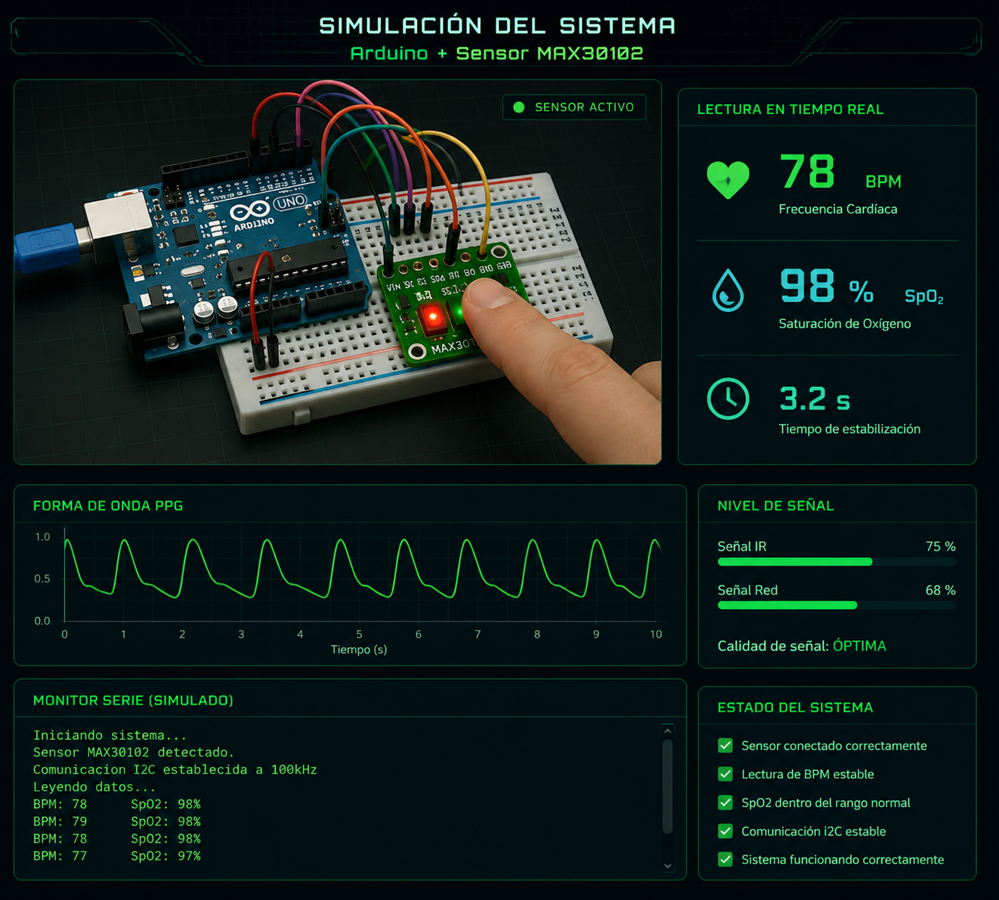

Descripción completa, materiales, conexiones y resultados del Monitor de Ritmo Cardíaco con Arduino y MAX30102.
El Monitor de Ritmo Cardíaco con Arduino es un dispositivo electrónico que utiliza el sensor MAX30102 para medir la frecuencia cardíaca (BPM) y la saturación de oxígeno en sangre (SpO₂) de una persona en tiempo real.
El sensor MAX30102 utiliza tecnología fotopletismografía (PPG): emite LEDs rojo e infrarrojo que atraviesan el tejido del dedo, y un fotodetector mide cuánta luz absorbe la sangre con cada latido, permitiendo calcular el ritmo cardíaco con alta precisión.
Los datos se procesan en la placa Arduino y se muestran en el Monitor Serie del Arduino IDE o en una pantalla LCD/OLED conectada al circuito.

🔌img/arduino1.jpgTodos los componentes son accesibles y de bajo costo, disponibles en tiendas de electrónica o en línea.

🛠️img/arduino2.jpgDiagrama de pines para conectar el sensor MAX30102 al Arduino Uno.
| MAX30102 | Arduino Uno | Función |
|---|---|---|
| VIN / VCC | 3.3V | Alimentación del sensor |
| GND | GND | Tierra / Referencia |
| SDA | A4 (SDA) | Datos I²C |
| SCL | A5 (SCL) | Reloj I²C |
En el Arduino IDE, instalar la librería SparkFun MAX3010x desde el Gestor de Librerías. Esta librería permite comunicarse fácilmente con el sensor usando I²C.
Conectar el sensor MAX30102 al Arduino según la tabla de conexiones: VIN a 3.3V, GND a GND, SDA al pin A4, y SCL al pin A5. Verificar que no haya cortocircuitos antes de conectar.
Cargar el código al Arduino usando el sketch de ejemplo de la librería MAX30105. El programa inicializa el sensor, configura la frecuencia de muestreo y los LEDs, y entra en un bucle de lectura continua.
El usuario coloca el dedo índice sobre los LEDs del MAX30102. Los LEDs emiten luz roja (660nm) e infrarroja (880nm) que penetran el tejido; el fotodetector mide la variación de absorción con cada latido.
El algoritmo calcula la frecuencia cardíaca detectando los picos de la señal PPG. Comparando la absorción de luz roja e infrarroja calcula la saturación de oxígeno (SpO₂) en tiempo real.
Los valores de BPM y SpO₂ se envían al Monitor Serie del Arduino IDE donde se pueden leer en tiempo real. Con una pantalla LCD/OLED adicional, el dispositivo funciona de forma completamente autónoma.

📊img/arduino3.jpg